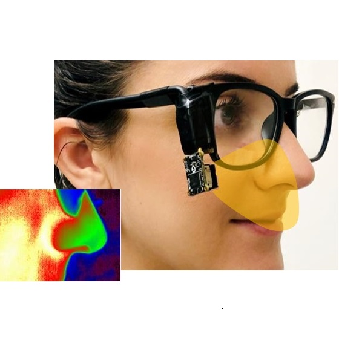

Jessica de Souza
 |
 |  |
 |
 |
 |
 |
|---|
I joined the University of California San Diego as a Ph.D. student in January of 2020, where I joined the Digital Health Technologies Lab advised by Professor Edward Wang.
At UCSD, my research focuses on solving problems inhealthcare and enabling affordable and convenient personal health monitoring for patients with specific needs.
In one of my projects, I explored the usage of PPG and force sensing to measure blood pressure for older adults, and also apply the same principle using smartphones in adults that need an easy self-assessment of their heart conditions. Currently, I am working with visual learning, sound analysis and processing to assess breastfeeding sounds, to help lactation consultants to improve their learning experience and better guide mothers who are breastfeeding.
My research interests involve ubiquitouscomputing and human-computer interaction for healthcare and how we can build accessible devices for people inneed, especially for chronic illnesses. I am also interested in novel methods to get reliable biological data, either byusing sensors, smartphones, or other devices. My technical background includes HCI and cognitive science, ubiquitouscomputing, sensing techniques, hardware development, embedded systems, data analysis, and signal processing.